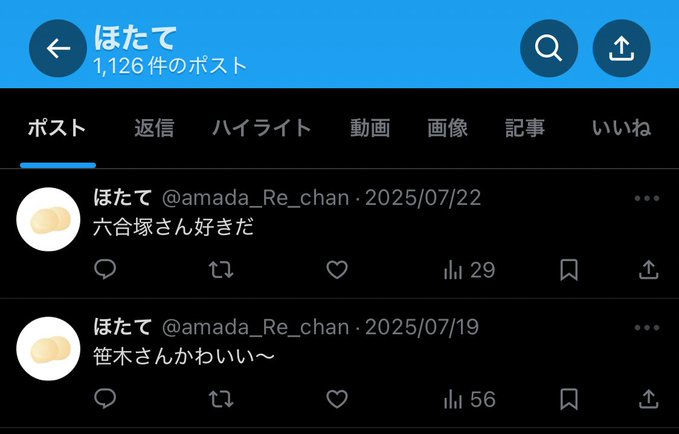

世田れい🧸
世田れい🧸企画主催。通話で相手を翻弄するのはお手の物。人心掌握。
 らあこ🐨
らあこ🐨文字だと元気。いつでも世田れいの手のひらで元気に横転中。
 ほたて（雑多アカ）
ほたて（雑多アカ）🐨が生き辛くて生まれた。隙あらば世田れいに求婚。
 🦀（制作アカ）
🦀（制作アカ）世田れいに食われるため立派なズワイを目指している。
 世田れい🧸
らあこ🐨
ほたて（雑多アカ）
🦀（制作アカ）
世田れい🧸
らあこ🐨
ほたて（雑多アカ）
🦀（制作アカ）🐨:（🎧接続切れてて聞こえなかった）
🧸: もしもし？れいの声聞こえる？よかったー。れいはずっと聞こえてたよ。
🐨: すみません💦緊張してて💦
🧸: いま外にいる？前も外だったよね。
🐨: 今はカフェにいます。え、れいさん前回のこと覚えてるんですか？
🧸: 覚えてるよー。
🐨: れいさんが覚えてることなんて一つもないと思ってました。
🧸: れいをなんだと思ってるのwww
🧸: れいもらあこさんとなに話そうか考えてたよ。
🐨: え聞きたいです。（うれちい）
🧸: ほたてちゃんめっちゃ見てるよって話とか。ストーカーしてる。反応しない方がいいかなと思ってしてないけど。
🐨: ありがとうございます。メインがChan🔒さんになったので、ほたてで反応したらおかしいから最近呟けてないですが…。
🧸: そっか、確かにね。でもほぼバレてるけどね。フォローリクエストめっちゃくる。送るんだぁ……って感じでみてる。
🧸: らあこさんにはこんな感じっで出しちゃう。らあこさんはそういうの大丈夫だと思うから。
🐨: それは大丈夫です。わたし友達よこちゃんしかいないので。
🧸: 全然悪意ではないんだけど、ほたてちゃんで他の人褒めてるとピリっとするｗ
🧸: ふぅん。こういうの聞くんだぁって。全然悪意はないんだけどね。
🐨: いや💦それとれいさんは全然違います。何か作ったりとかするのはれいさんだけ。
🧸: れいはれいの枠があるってこと？
🐨: はい。趣味「世田れい」です。本当に。
🧸: 推し活慣れてるよね。
🐨: そうですかね。色々見ますけど続かないですね。だかられいさんが特殊です。
🧸: 続かないっていうのは、飽きるってこと？
🐨: 飽きるというか、（いいなと思うけど、）突然見たり聞いたりしなくなる感じです。
🧸: 会話。
🐨: Vtuberとかファンの母数が多い会話。
🧸: 最近の面白かったことを共有するよ。
🐨: ぜひ！
🐨: 会話。
🧸: 会話。
🐨: 会話。
🧸: 好きな映画は？
🐨: 最近はホラーかな。でもコメディも捨てがたい。
🐨: 会話。
🧸: 会話。
🐨: 会話。
🧸: 最近始めた趣味は？
🐨: ヨガと手作りキャンドル。リラックスできるんだ。
🐨: 会話。
🧸: 会話。
🐨: 会話。
🧸: 旅行で一番印象に残ってる場所は？
🐨: 北海道の温泉かな。景色が最高だった。
🐨: 会話。
🧸: 会話。
🐨: 会話。
🧸: 新しいことに挑戦したことある？
🐨: 英語でスピーチをやってみた。緊張したけど楽しかった。
🐨: 会話。
🧸: 会話。
🐨: 会話。
🧸: 今日のファンミ本当に楽しかった！
🐨: これからもみんなで楽しもうね。
🐨: 会話。
🧸: 会話。
🐨: 会話。